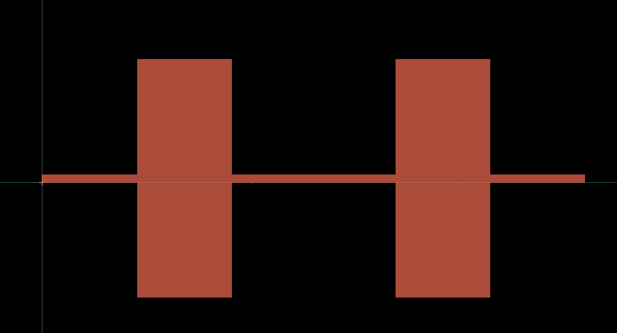
July 22, 2026
Project Sections
- Overview and design targets
- Chebyshev prototype synthesis
- Lumped-element ADS reference
- Stepped-impedance transformation
- Ideal transmission-line model
- FR-4 microstrip synthesis
- Momentum full-wave model
- HFSS cross-validation
- Electromagnetic optimization
- Final result versus lumped reference
- Limitations and next steps
- Conclusions
1. Overview and Design Targets
At microwave frequencies, discrete inductors and capacitors are increasingly influenced by package parasitics, self-resonance, and layout-dependent behavior. A stepped-impedance low-pass filter replaces those components with alternating high- and low-characteristic-impedance transmission-line sections. Electrically short high-impedance sections act mainly as series inductors, while low-impedance sections act mainly as shunt capacitors.
This project follows the complete design path from a normalized Chebyshev prototype to a physical FR-4 microstrip layout. The circuit is evaluated progressively using an ideal lumped model, ideal transmission lines, ADS MLIN elements, ADS Momentum, and an independent Ansys HFSS reconstruction. The first physical layout departed substantially from the circuit-level prediction, so the final stage uses staged HFSS parameter sweeps to recover the intended transition frequencies.
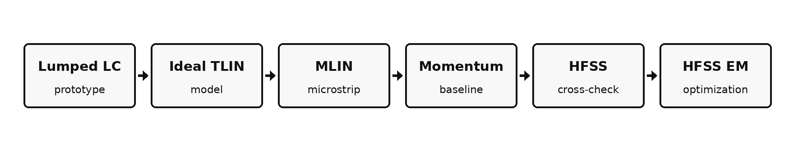
| Parameter | Selected value |
|---|---|
| Filter response | Chebyshev Type I |
| Order | 5 |
| Passband ripple | 0.1 dB |
| Passband-edge frequency | 3 GHz |
| Reference impedance | 50 Ω |
| Implementation | Stepped-impedance microstrip on FR-4 |
The 3 GHz specification is the Chebyshev passband edge, where the ideal response reaches −0.1 dB. It is not the conventional −3 dB frequency. The −3 dB and −20 dB crossings are extracted separately and used as the primary transition-region comparison metrics.
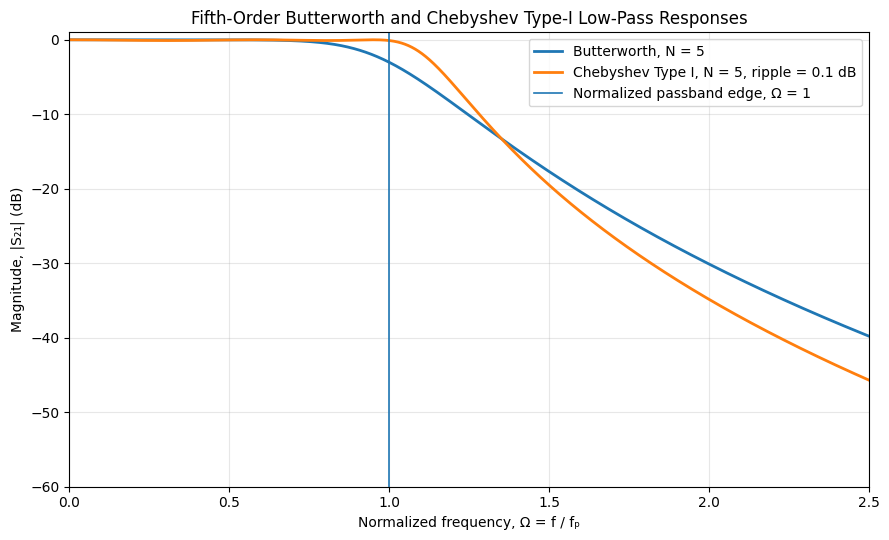
2. Chebyshev Prototype Synthesis
In an application-driven design, the minimum order is determined from the allowed passband ripple, required stopband attenuation, and normalized stopband frequency:
No unique stopband specification was imposed in this exploratory project, so a fifth-order network was selected directly as a useful compromise between response sharpness and physical complexity.
For a 0.1 dB Chebyshev Type-I response, the ripple factor is:
The normalized coefficients are obtained from the standard Chebyshev Type-I low-pass prototype recursion. For the selected order \(N=5\), first calculate:
The recursive prototype calculation gives the normalized coefficients:
| Coefficient | Value | Role |
|---|---|---|
| \(g_0\) | 1 | Source termination |
| \(g_1\) | 1.147 | Series inductor |
| \(g_2\) | 1.371 | Shunt capacitor |
| \(g_3\) | 1.975 | Series inductor |
| \(g_4\) | 1.371 | Shunt capacitor |
| \(g_5\) | 1.147 | Series inductor |
| \(g_6\) | 1 | Load termination |
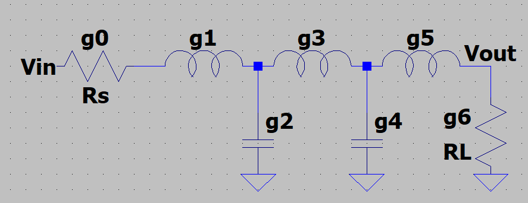
The prototype is normalized to a 1 Ω termination and a 1 rad/s passband edge. At the normalized passband edge, a series-inductor coefficient represents reactance \(X_L=g_k\), while a shunt-capacitor coefficient represents susceptance \(B_C=g_k\). Restoring the target impedance \(Z_0\) and angular passband-edge frequency \(\omega_p\) gives:
| Element | Prototype coefficient | Scaled value |
|---|---|---|
| \(L_1\) | \(g_1\) | 3.042 nH |
| \(C_2\) | \(g_2\) | 1.455 pF |
| \(L_3\) | \(g_3\) | 5.239 nH |
| \(C_4\) | \(g_4\) | 1.455 pF |
| \(L_5\) | \(g_5\) | 3.042 nH |
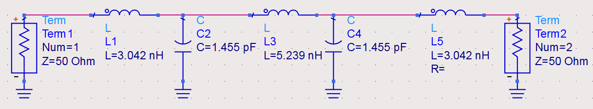
3. Lumped-Element ADS Reference
The ideal LC ladder establishes the theoretical response that every distributed and full-wave model is compared against. It contains no component loss, package parasitics, substrate effects, or electromagnetic coupling.
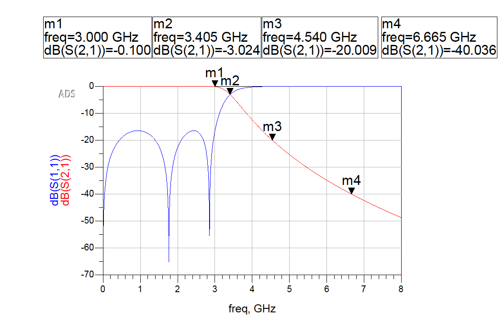
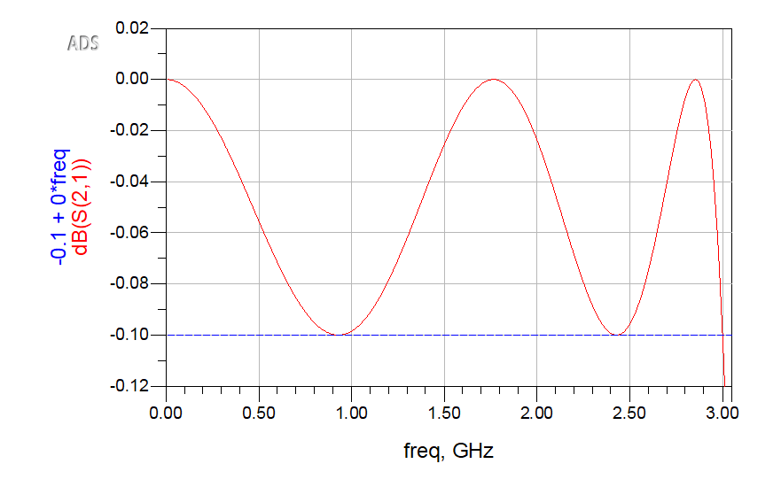
| Reference metric | Lumped result |
|---|---|
| \(S_{21}(3\text{ GHz})\) | −0.1 dB |
| −3 dB crossing | 3.405 GHz |
| −20 dB crossing | 4.54 GHz |
| −40 dB crossing | 6.665 GHz |
| Ideal transition width, −3 to −20 dB | 1.135 GHz |
For the ideal lumped-element response, 6.665 GHz is the frequency at which transmission first reaches approximately −40 dB. The later distributed and full-wave responses do not reach −40 dB within the 0.01–8 GHz simulation range. Accordingly, those models are compared using the fixed-frequency value \(S_{21}(6.665\text{ GHz})\), rather than a nonexistent −40 dB crossing.
4. Stepped-Impedance Transformation
The LC sequence \(L_1-C_2-L_3-C_4-L_5\) is transformed into a continuous \(Z_H-Z_L-Z_H-Z_L-Z_H\) line. For electrically short sections, the ABCD matrix separates approximately into dominant series and shunt terms:
A larger impedance ratio improves the inductive/capacitive separation but produces increasingly extreme microstrip widths. The selected compromise was:
| Section | Impedance | Electrical length at 3 GHz |
|---|---|---|
| Outer high-impedance sections | 120 Ω | 27.38° |
| Low-impedance sections | 20 Ω | 31.43° |
| Center high-impedance section | 120 Ω | 47.15° |
The 47.15° center section is not especially short, so deviation from the ideal LC response is expected even before physical discontinuities are introduced.
5. Ideal Transmission-Line Model
The calculated sections were first implemented using ideal, lossless ADS TLIN elements. This isolates the distributed approximation from substrate loss, conductor loss, dispersion, and physical width-step parasitics.
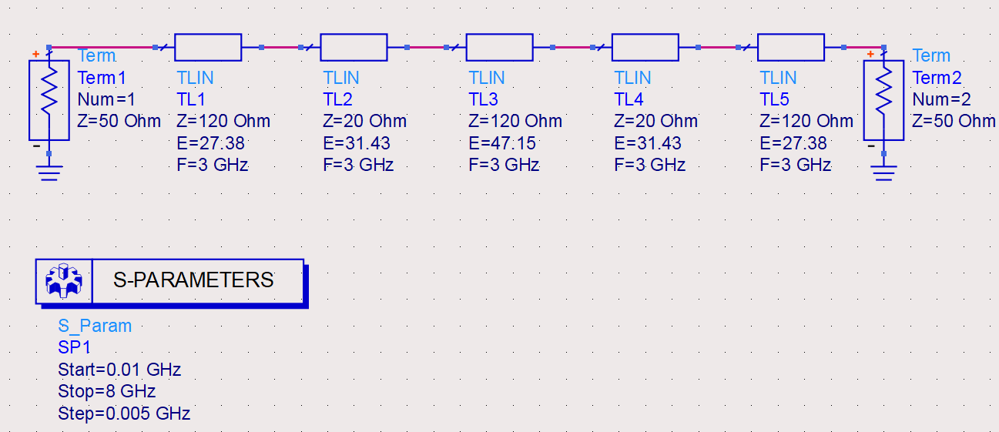
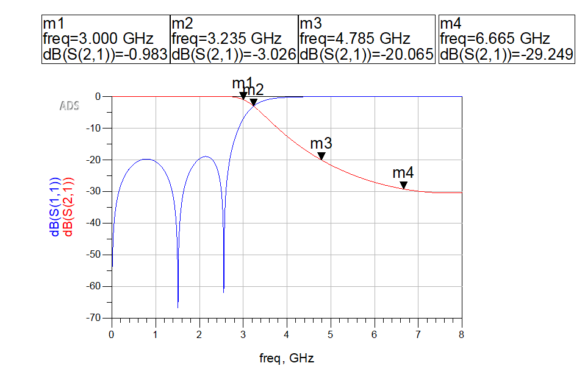
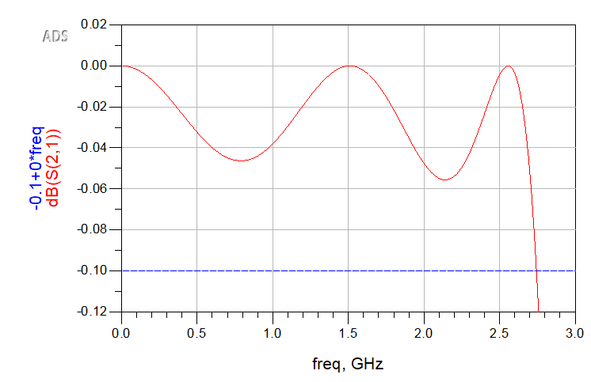
| Metric | Lumped LC | Ideal TLIN |
|---|---|---|
| \(S_{21}(3\text{ GHz})\) | −0.1 dB | −0.983 dB |
| −3 dB crossing | 3.405 GHz | 3.235 GHz |
| −20 dB crossing | 4.54 GHz | 4.785 GHz |
| Transition width | 1.135 GHz | 1.55 GHz |
The ideal line model already broadens the transition and reduces the 3 GHz transmission. Those changes arise from the finite electrical lengths and from the fact that each line contains both series and shunt contributions.
6. FR-4 Microstrip Synthesis and MLIN Model
The ideal sections were converted to physical microstrip using ADS LineCalc and the representative substrate definition \(h=1.6\ \text{mm}\), \(\varepsilon_r=4.3\), copper thickness \(t=0.035\ \text{mm}\) (\(35\ \mu\text{m}\)), and \(\tan\delta=0.02\).
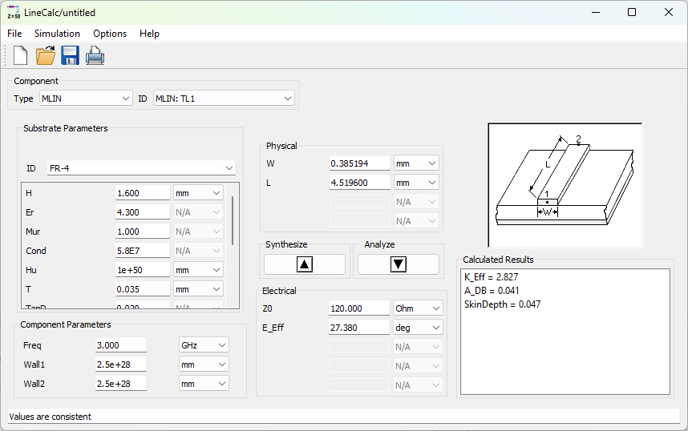
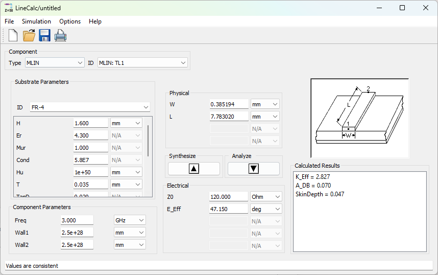
| Line type | Width | Physical length |
|---|---|---|
| 120 Ω outer sections | 0.385 mm | 4.52 mm |
| 20 Ω sections | 11.386 mm | 4.52 mm |
| 120 Ω center section | 0.385 mm | 7.783 mm |
The width ratio is approximately 29.56:1, producing four severe discontinuities between the narrow and wide sections.
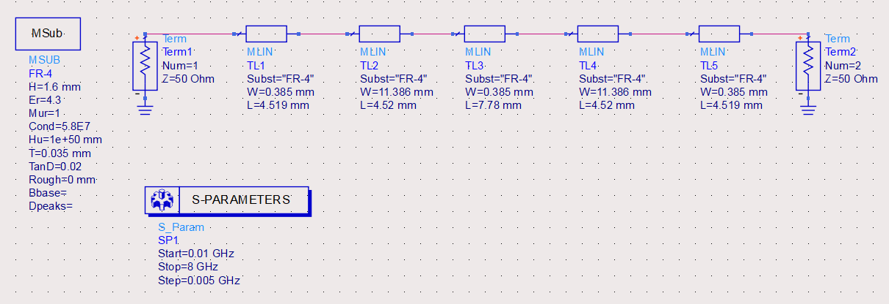
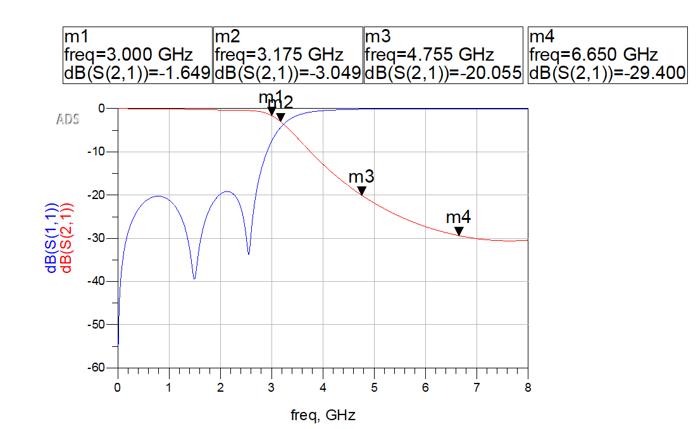
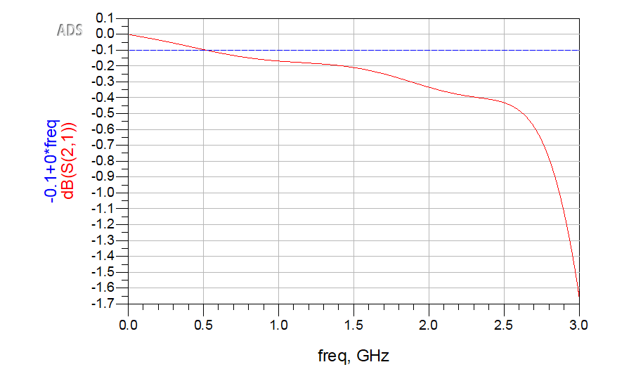
| Metric | Ideal TLIN | MLIN |
|---|---|---|
| \(S_{21}(3\text{ GHz})\) | −0.983 dB | −1.649 dB |
| −3 dB crossing | 3.235 GHz | 3.175 GHz |
| −20 dB crossing | 4.785 GHz | 4.755 GHz |
The circuit-level microstrip model adds the expected dielectric and conductor loss, while its transition frequencies remain close to the ideal TLIN model. It still treats each section as a uniform line connected through idealized junctions.
7. ADS Momentum Full-Wave Model
The complete stepped-width geometry was then solved as one planar electromagnetic structure in ADS Momentum. The ports were placed directly at the two outer 120 Ω section ends, without additional 50 Ω access lines, so the EM reference plane remained at the filter boundaries.
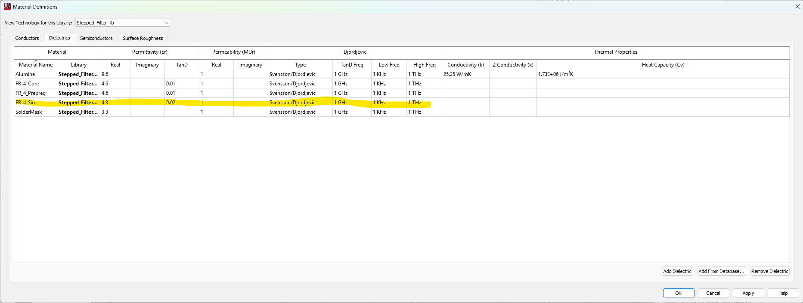
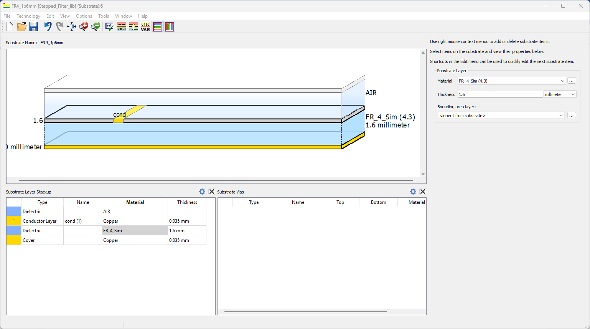
A mesh-convergence check increased the global density to 100 cells per wavelength. The response did not change meaningfully, supporting the conclusion that the large frequency shift was physical rather than a meshing artifact.
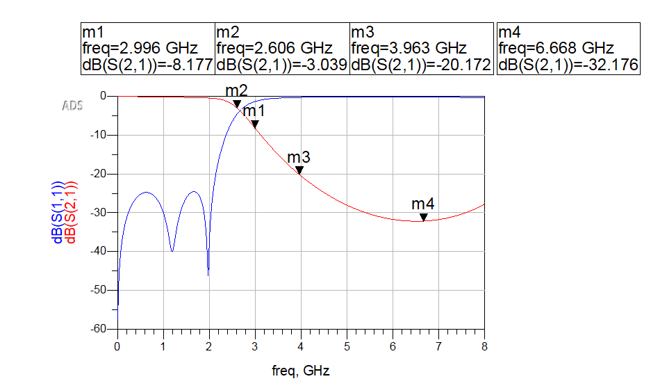
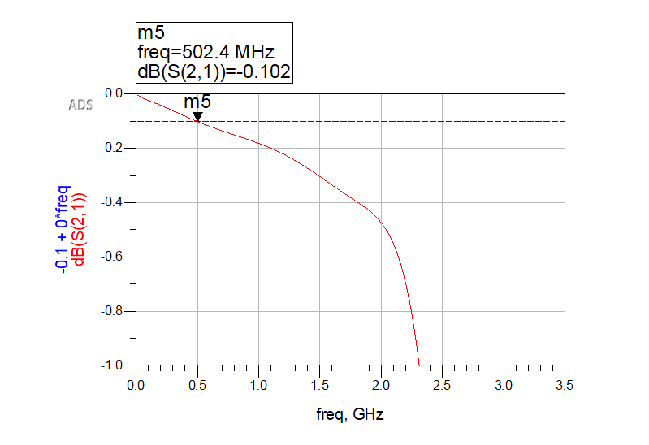
| Metric | MLIN | Momentum |
|---|---|---|
| \(S_{21}(3\text{ GHz})\) | −1.649 dB | −8.177 dB |
| −3 dB crossing | 3.175 GHz | 2.606 GHz |
| −20 dB crossing | 4.755 GHz | 3.963 GHz |
| Fixed-frequency stopband marker, \(S_{21}(6.665\text{ GHz})\) | approximately −29.4 dB | −32.176 dB |
Momentum revealed the dominant practical issue: the abrupt impedance steps add substantial electromagnetic loading and make the structure electrically longer than the isolated-line synthesis predicts. The first-pass physical response shifted sharply downward and became strongly mismatched around the intended 3 GHz passband edge.
8. Independent HFSS Cross-Validation
Before tuning the dimensions, the same physical geometry was rebuilt independently in Ansys HFSS. The model used parameterized section coordinates, compact trace-to-ground lumped ports, a finite ground and substrate, a surrounding radiation region, and a causal Djordjevic-Sarkar FR-4 definition referenced to 1 GHz.
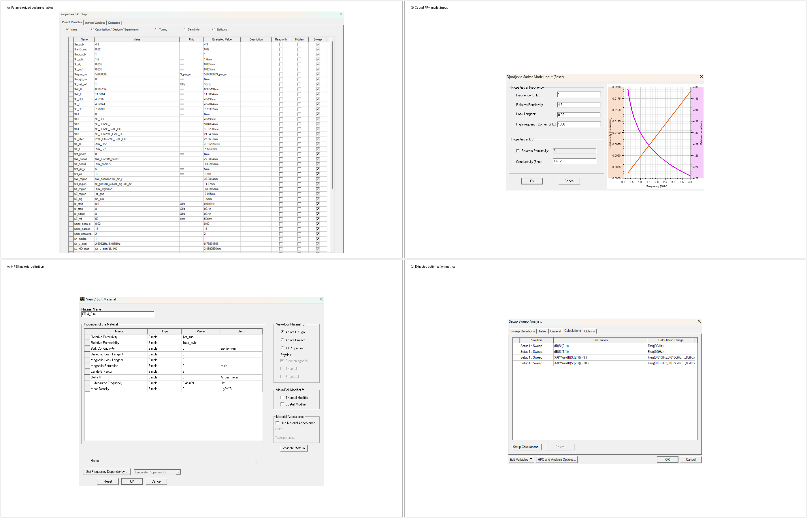
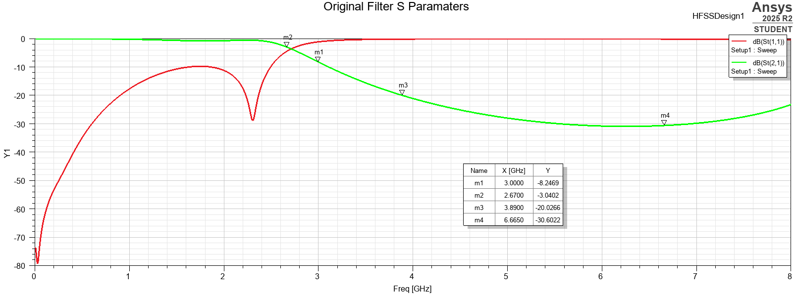
| Metric | Momentum | HFSS baseline | Difference |
|---|---|---|---|
| \(S_{21}(3\text{ GHz})\) | −8.177 dB | −8.247 dB | −0.07 dB |
| −3 dB crossing | 2.606 GHz | 2.67 GHz | +64 MHz |
| −20 dB crossing | 3.963 GHz | 3.89 GHz | −73 MHz |
| Fixed-frequency stopband marker, \(S_{21}(6.665\text{ GHz})\) | −32.176 dB | −30.602 dB | +1.574 dB |
The close agreement between two independently constructed full-wave models confirmed that the severe downward shift was a real property of the geometry rather than a Momentum-specific artifact.
9. Electromagnetic Length Optimization
The HFSS geometry was parameterized using a common length factor and three symmetric section-family factors:
Four scalar quantities were extracted for every Optimetrics variation: \(S_{11}(3\text{ GHz})\), \(S_{21}(3\text{ GHz})\), the first −3 dB crossing, and the first −20 dB crossing. The optimization proceeded from broad frequency alignment to one-variable sensitivity studies and finally two coupled multi-parameter sweeps.
9.1 Global scale sweep
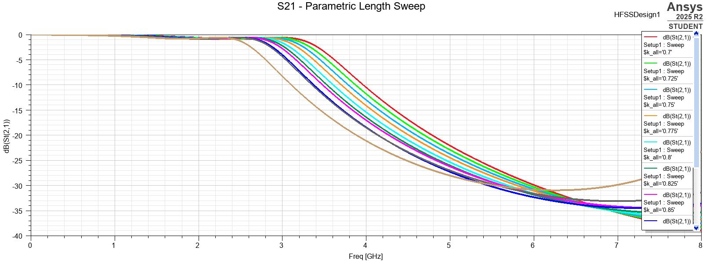
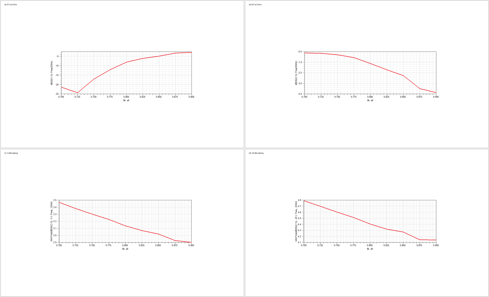
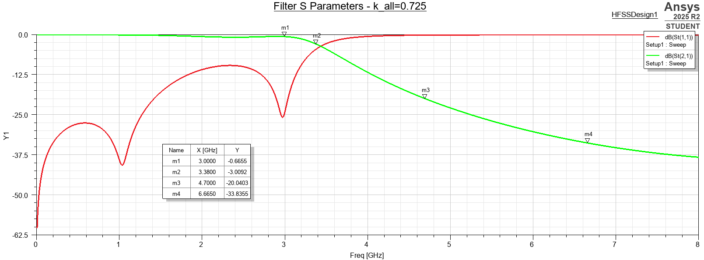
The initial −3 dB frequency of 2.67 GHz suggested an inverse-length estimate near 0.78. The sweep identified \(k_{all}=0.725\) as the best practical global starting point: the −3 dB crossing moved to approximately 3.38 GHz and the 3 GHz insertion loss improved from about −8.25 dB to −0.67 dB.
9.2 Individual section sensitivity
With \(k_{all}=0.725\), each section family was swept separately to identify its primary effect.
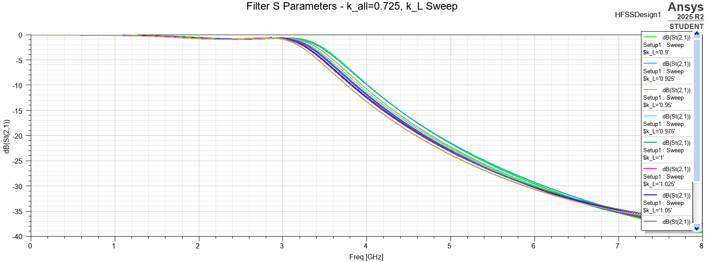
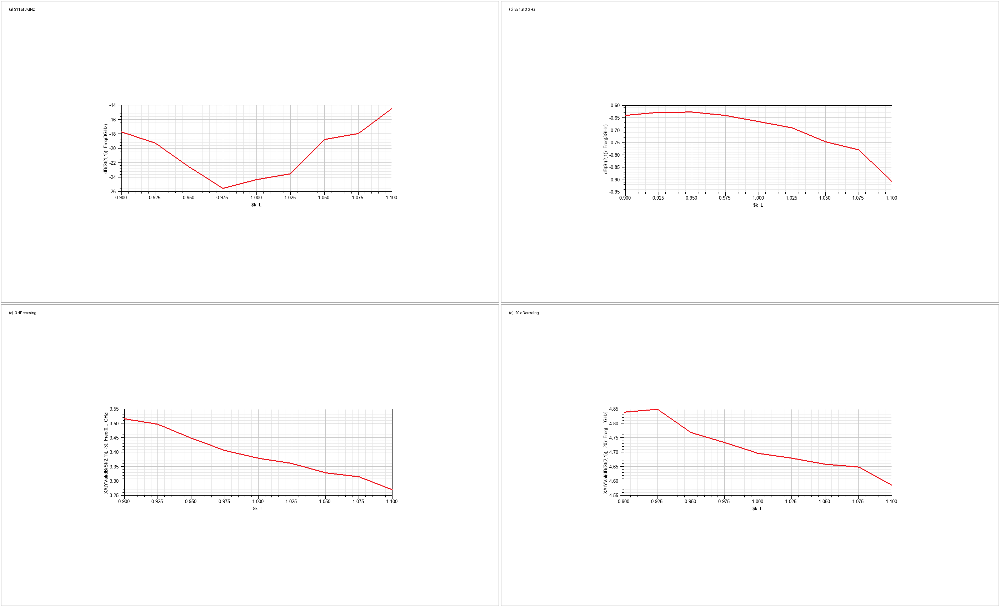
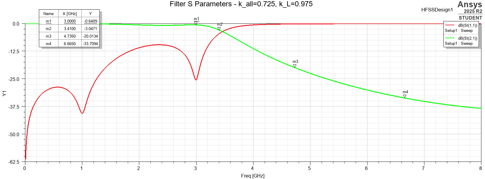
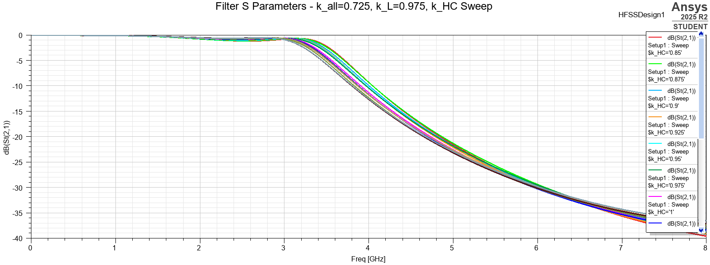
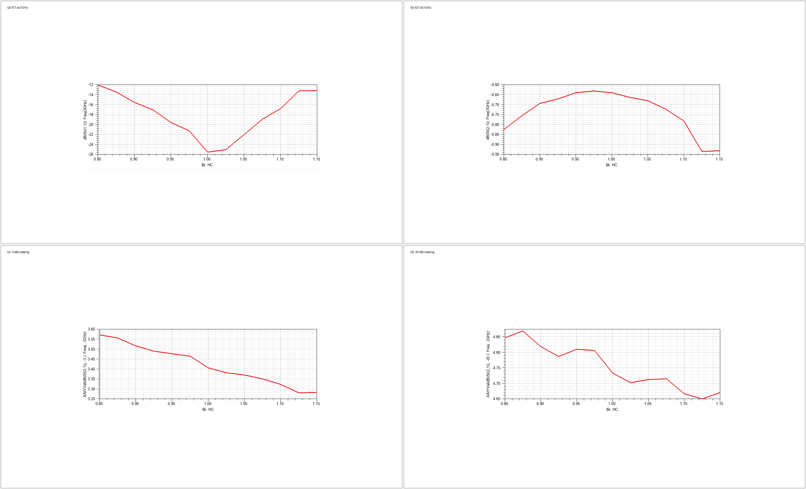
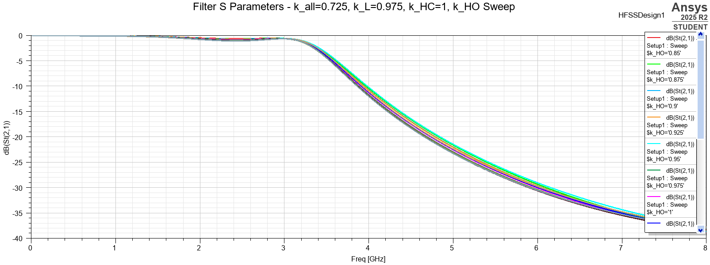
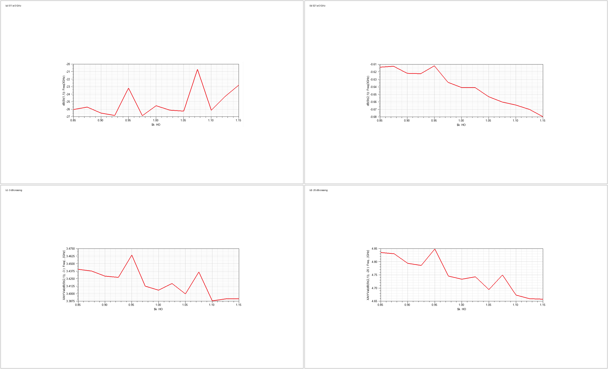
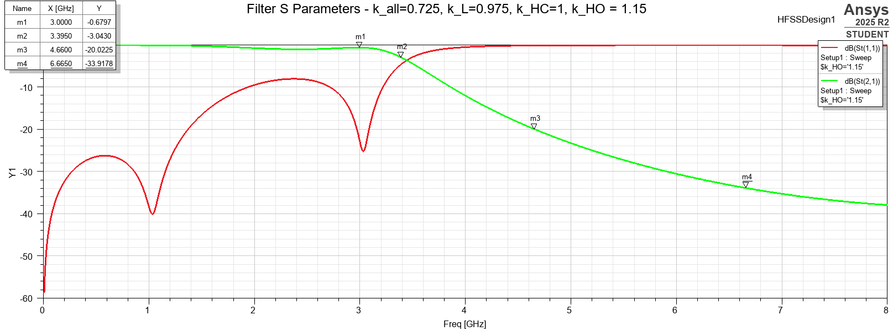
| Variable | Main observed effect |
|---|---|
| \(k_L\) | Moves both transition crossings and strongly influences 3 GHz matching. |
| \(k_{HC}\) | Primarily shifts the overall response and has a pronounced matching optimum near unity. |
| \(k_{HO}\) | Changes the −20 dB crossing more than the −3 dB crossing, helping narrow the transition. |
9.3 Coupled multi-parameter sweeps
One-at-a-time sweeps could not simultaneously match the two transition crossings while preserving good 3 GHz transmission and return loss. Two 27-point Cartesian sweeps were therefore used to expose interactions among the section families.
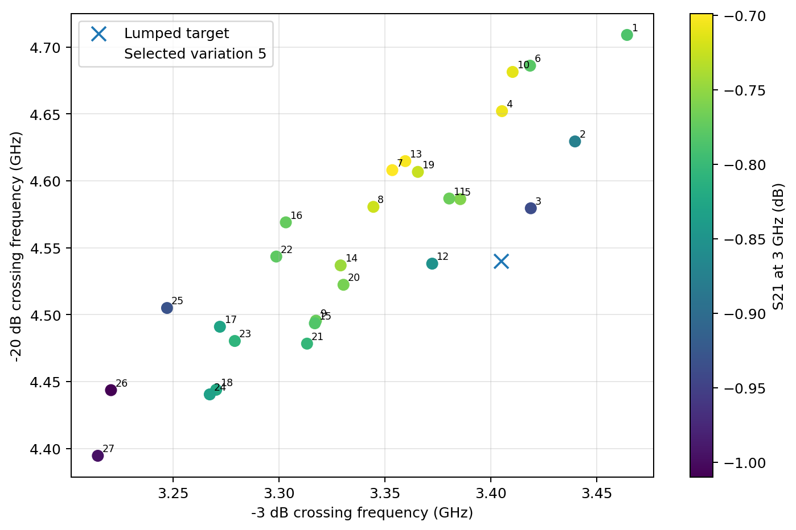
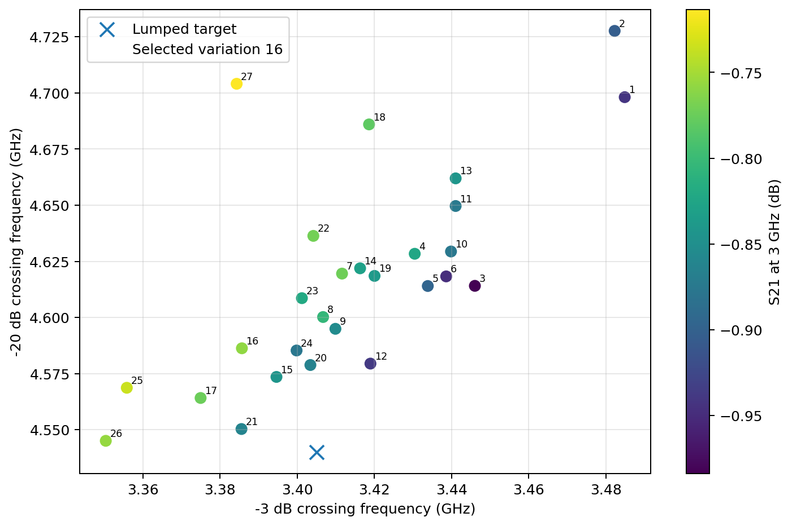
The final selection was Variation 16:
| Scale factor | Selected value |
|---|---|
| \(k_{all}\) | 0.725 |
| \(k_L\) | 1.05 |
| \(k_{HC}\) | 0.9 |
| \(k_{HO}\) | 1.2 |
| Physical section | Final length |
|---|---|
| Outer 120 Ω section 1 | 3.932 mm |
| 20 Ω section 2 | 3.441 mm |
| Center 120 Ω section 3 | 5.078 mm |
| 20 Ω section 4 | 3.441 mm |
| Outer 120 Ω section 5 | 3.932 mm |
| Total stepped length | 19.825 mm |
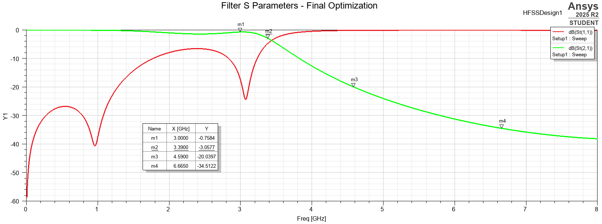
10. Final Result Versus the Lumped Reference
The lumped model reaches −40 dB at 6.665 GHz. Since the original Momentum and optimized HFSS responses do not reach −40 dB within the simulated band, the final table uses \(S_{21}(6.665\text{ GHz})\) as a common fixed-frequency stopband comparison.
| Metric | Lumped LC target | Original Momentum | Optimized HFSS | Final error versus lumped |
|---|---|---|---|---|
| \(S_{21}(3\text{ GHz})\) | −0.1 dB | −8.177 dB | −0.758 dB | −0.658 dB |
| \(S_{11}(3\text{ GHz})\) | approximately −16.43 dB worst-case ripple | strongly mismatched | −17.52 dB | Meets the practical −15 dB criterion |
| −3 dB crossing | 3.405 GHz | 2.606 GHz | 3.386 GHz | −19.31 MHz (−0.57%) |
| −20 dB crossing | 4.54 GHz | 3.963 GHz | 4.586 GHz | +46.29 MHz (+1.02%) |
| Transition width | 1.135 GHz | 1.357 GHz | 1.201 GHz | +65.6 MHz (+5.78%) |
| Fixed-frequency stopband comparison, \(S_{21}(6.665\text{ GHz})\) | −40.036 dB | approximately −32.18 dB | −34.512 dB | 5.52 dB less attenuation |
The final geometry does not reproduce the ideal lossless Chebyshev response exactly. The FR-4 implementation retains approximately 0.66 dB of additional insertion loss at 3 GHz and a slightly wider transition. However, the optimization recovered the principal frequency behavior extremely well: both transition crossings are within about 1% of the lumped targets, and the 3 GHz return loss is better than −17 dB.
Relative to the original physical layout, the improvement is substantial. The 3 GHz transmission increased by approximately 7.42 dB, the −3 dB crossing moved upward by about 780 MHz, and the −20 dB crossing moved upward by about 623 MHz.
11. Limitations and Next Steps
- The short-line stepped-impedance transformation remains approximate, especially for the original 47.15° center section.
- The 29.56:1 width ratio creates strong discontinuity capacitance and a physically wide layout.
- The FR-4 material values are representative rather than tied to a characterized laminate lot; the actual \(\varepsilon_r\), loss tangent, and copper roughness will vary.
- The compact lumped-port HFSS model was selected to match the filter-boundary reference planes. A wave-port sensitivity run would provide an additional port-formulation check.
- The optimized geometry has been validated in HFSS but has not yet been re-simulated in Momentum. Repeating the final geometry in Momentum is the most important remaining cross-solver verification step.
Further improvements could explore less extreme impedance ratios, tapered width transitions, a lower-loss microwave substrate, fabrication-tolerance sweeps, and direct Momentum-based optimization.
12. Conclusions
This project demonstrates a complete microwave-filter workflow: normalized Chebyshev synthesis, lumped-element validation, stepped-impedance conversion, ideal distributed simulation, physical microstrip synthesis, planar EM analysis, independent 3D full-wave verification, and staged geometry optimization.
The ideal circuit established clear reference values, while the TLIN and MLIN stages exposed the limitations of the short-line approximation and material loss. Momentum then revealed the largest practical effect: the complete stepped geometry was substantially more electrically loaded than the circuit model predicted. HFSS reproduced that result closely, establishing confidence in the diagnosis, and the parameterized model made it possible to recover the intended transition behavior.
The selected optimized design achieves \(S_{21}(3\text{ GHz})=-0.758\text{ dB}\), \(S_{11}(3\text{ GHz})=-17.52\text{ dB}\), a −3 dB crossing at 3.386 GHz, and a −20 dB crossing at 4.586 GHz. The final result is a strong simulation-level design and a clear demonstration of why full-wave electromagnetic validation is essential when classical transmission-line synthesis is translated into an abrupt physical microwave layout.
Back to Portfolio